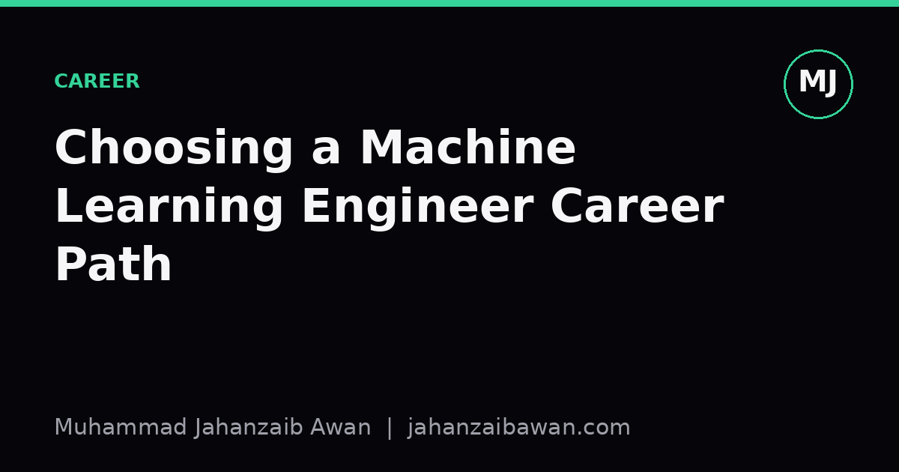

Choosing a Machine Learning Engineer Career Path
Research, platform, and applied ML roles reward different skills and different temperaments. Knowing the difference early saves years of drifting.

Same job title, three different jobs
I keep seeing the same confusion among people starting out in machine learning: they treat "ML engineer" as one job with one ladder. It is not. Under that label sit at least three distinct careers that share some vocabulary and very little else. A research scientist, a platform or MLOps engineer, and an applied ML engineer at a product company can go a whole conference without fully understanding each other's day-to-day.
This matters because the skills you build compound in a direction. If you spend two years tuning transformer architectures and writing ablation studies, you become excellent at something quite different from someone who spent two years building a feature store that serves predictions to ten million users with a ninety-nine millisecond budget. Both are legitimate, well-paid, intellectually serious paths. But drifting between them without noticing wastes time, because the portfolio that impresses one hiring manager can look thin to another.
I think the clearest way to decide is not to ask "which pays more" or "which is more prestigious", but to ask what kind of problem gives you energy: an open question with no guaranteed answer, a system that must not fall over at three in the morning, or a business metric that needs to move this quarter. Each path optimises for a different one of those.
Research: living with uncertainty
Research-track roles, whether in a lab, a university-adjacent industry team, or a frontier AI company, are fundamentally about reducing uncertainty in a space where nobody knows the answer yet. The day-to-day is reading papers, forming hypotheses, running experiments that often fail, and writing up results clearly enough that someone else can reproduce them. A good research engineer can hold a question like "does this regularisation term actually help, or did we just get a lucky random seed" and answer it properly, with multiple seeds, held-out data, and honest error bars, rather than shipping the first result that looks good.
Concretely, imagine testing a new training trick that reportedly improves accuracy by two percentage points on a benchmark. A research mindset means running it five times with different seeds, finding the gain is really one point plus or minus one point, and reporting that honestly rather than the headline number from a single lucky run. That instinct, treating a small number of runs as noisy evidence rather than proof, is the core craft of research, and it is exactly where a lot of published work quietly falls short.
The trade-off is that research roles often reward depth over breadth and tolerate long periods without a shippable outcome. You need genuine comfort with being wrong most of the time, strong mathematical grounding, and the patience to write things up properly even when the result is negative. If your energy comes from seeing a feature used by real customers next week, this path will frustrate you.
Platform and applied: building the thing and shipping it
Platform engineering, sometimes labelled MLOps, is about making machine learning reliable, repeatable, and boring in the good sense. The central question is not "does this model work" but "can a hundred models like this one be trained, versioned, monitored, and rolled back safely by a team that is not you". That means thinking in terms of data pipelines, feature stores, experiment tracking, model registries, latency budgets, and the quiet discipline of leakage-aware data splits so that a model's offline score actually means something once it is in production.
A worked example makes the stakes obvious. Suppose a model scores ninety-four percent accuracy offline but drops to eighty-one percent within a month of deployment. A platform engineer's first instinct is not to blame the model architecture; it is to check whether the training data leaked future information, whether the feature pipeline computes things differently at serving time than at training time, and whether the input distribution has simply shifted. That diagnostic habit, treating a performance drop as a systems question first and a modelling question second, is the heart of the platform mindset, and it is a skill research-focused engineers often have to learn the hard way.
Applied ML sits closer to the product. Here the job is choosing the right model for a real constraint, often a boring logistic regression or gradient-boosted tree rather than anything exotic, and proving it moves a metric the business cares about: conversion, churn, fraud caught per analyst hour. The craft is less about novel architectures and more about framing the problem correctly, picking an honest evaluation metric that cannot be gamed, and communicating trade-offs to non-technical stakeholders. An applied engineer who ships a slightly worse model two months earlier, with clear monitoring and a rollback plan, is usually doing their job better than one who ships a marginally better model six months late.
How to actually choose
A practical way to test fit is to notice what you do voluntarily. If you find yourself re-deriving why a loss function behaves the way it does, or getting genuinely curious about why a paper's ablation table does not add up, that is a research signal. If you enjoy the plumbing, caring about why a deployment pipeline failed at 2am more than why the model's weights look a certain way, that points towards platform work. If your satisfaction comes from watching a dashboard metric move after a model goes live, and you would rather use a well-understood algorithm that works than a clever one that might, applied is probably your lane.
None of these paths are fixed for life, and the boundaries blur at senior levels, where research engineers need production instincts and platform engineers need to understand model behaviour well enough to debug it. But early on, picking a primary direction and building a coherent portfolio around it, rather than a scattered mix of a paper replication, a half-finished Kubernetes project, and a single product dashboard, will make you far more legible to anyone hiring. Choose based on which failure mode bothers you least: an unanswered question, a system outage, or a metric that refuses to move. That discomfort tolerance, more than any ranking of prestige or salary, is the honest signal for where you will actually thrive.